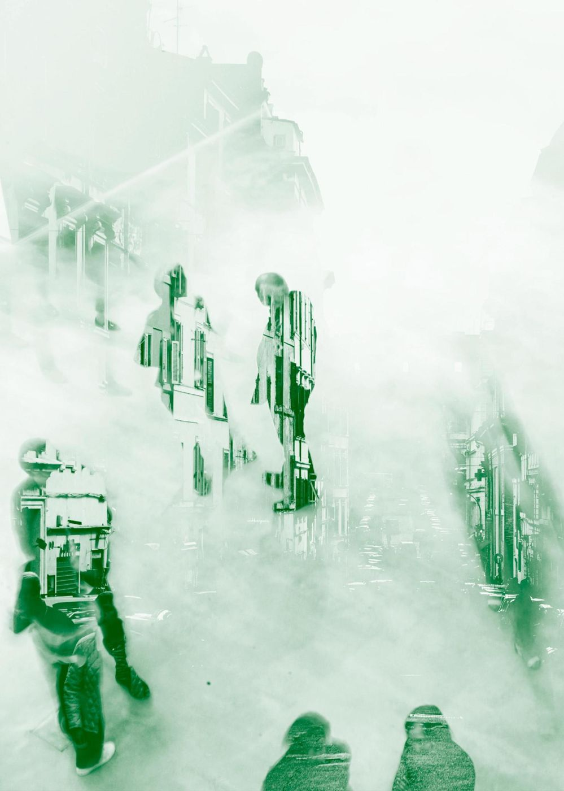

We're a think-and-do tank.
If you pay for research from almost any other research firm, you're just gonna get research.
We don't like to walk away from puzzles that are unfinished, and we don't like to hand our best insights to people who will water them down. So we see things through.

Noticing what a problem is, listening to the problem, understanding what we can about it.
Having insights that other people didn't have about the problem.
We do the measurements and design the study, and hire the right partners to run it.
A proper strategy for how to address the problem. If we need help, we work with an established strategy firm.
Turning that strategy into creative briefs and design briefs, for the exact right partners.
Some kind of artistic, cultural artifact, in any medium, that moves the needle. Ideally we sit on the team, hire the people and direct them.
When it's time to take it to the press, we're happy to work with a PR firm, but we like to direct them.
Grant makers and corporate partners, to take the work further without touching the creative magic.
Writing legislation, or working with lobbying groups and legislators, so the change lasts.
We work with whoever has the specific domain expertise. But we shepherd the whole project through this cycle, and we take ownership and accountability for it all the way through, until the policy changes.
Three reasons.
We measure before we make.
We find the value hiding in how people think, and we put a number on it. Every project states its predictions up front and publishes the result. Example: AXL-WP-02 ->
It has already worked.
Michelin funded a new vehicle for the Grand Central Food Program (confirmed by the program, 2026); service figures last confirmed 2017. The story ->
One roof is possible now.
AI made polish free, and trust is near record lows. A small senior team can now run research, creative and policy as one project, so you don't need three firms.
Bring us the problem.
Bring us a system you run: a queue, a policy, a schedule, a brand, a public you need to reach. We'll show you where it's losing trust and value, and what a better mechanism could do. If we're not the right fit, we'll say so.
[ BOOK_A_MEETING ]Or write to imran@auxlabs.co · Want the long version? Read the FAQ ->